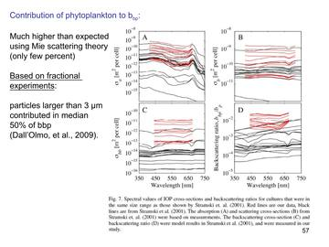

Home › D · Particle scattering
Particles (phytoplankton, detritus, minerals, bacteria) dominate scattering in most waters. Their VSF is forward-peaked; the spectral shape of b_p and b_bp and the ratio b_bp/b_p carry information on size and refractive index.
The VSF of particles
Particle scattering is strongly forward, mainly by diffraction, which makes it very sensitive to size. Differences between particle types show up mostly in the backward direction (> 90°), which is also the direction measured by backscattering sensors (slide 46). Large particles scatter ∝ area, small ones ∝ volume (slide 64).
Spectral dependence
The lecture models bp and bbp as power laws:
Mie check (Python, own). A Junge distribution of non-absorbing spheres (m = 1.05, D = 0.1–100 µm) gives n = -0.56, -1.01, -1.91 for ξ = 3.5, 4, 5, i.e. n ≈ −(ξ − 3): this is the relation ξ = γ + 3 of slide 68. Particle absorption lowers bp by 5–30 % (slide 53). Snyder et al. (2008, slide 51) find bp exponents near −0.3 and bbp exponents near −1; a power law fits within about ±10 % (slide 52).
Backscattering ratio
bbp/bp depends on refractive index first, then size (slide 71). Textbook indices: phytoplankton 1.01–1.09, detritus/minerals 1.15–1.20. In our Mie runs (ξ = 4) the ratio rises from 0.0024 (m = 1.02) to 0.0367 (m = 1.20). Phytoplankton cultures backscatter much more than Mie theory predicts, and particles larger than 3 µm provide a median 50 % of bbp (slide 57). In the field, bbp/bp separates a bloom (low) from a nepheloid layer (high) (slide 84).
Worked example, quick Q&A and memory hooks
bp(550) = 1.0 m⁻¹, n = −1 ⇒ bp(440) = (440/550)−1 = 1.25 m⁻¹; n = −3 ⇒ 1.95 m⁻¹. Small particles (steep n) scatter much more in the blue.
Quick Q&A
A: Diffraction around particles larger than the wavelength (slides 46, 64).
A: Those with a higher refractive index (minerals, detritus) (slide 71).
Memory hooks
- Big and forward; small and symmetric.Hạt lớn: về phía trước; hạt nhỏ: đối xứng.
- Index first, size second.Chiết suất trước, kích thước sau.
Lecture slides for this module (Loisel, Marine Optics)
10 slides of the lecture “Marine Optics” (H. Loisel, LOG). Numbers refer to the slide number in the file. Click a page to enlarge; browse all pages.




Exam checklist — points you must mention
- Describe the forward peak and the Rayleigh/Mie patterns (slides 46–47, 64).
- Write the power law and give n ∈ [−3, 0], mean −1.
- Explain how absorption modifies b_p (slide 53).
- State what controls b_bp/b_p (index, then size) and typical values for organic vs mineral particles.
- Summarise the phytoplankton–b_bp question (slides 54–57).
- Tán xạ hạt chủ yếu về phía trước (nhiễu xạ); b_p ∝ λ^n, n trung bình ≈ −1.
- b_bp/b_p phụ thuộc chiết suất trước, kích thước sau.
- Thực vật phù du tán xạ ngược nhiều hơn lý thuyết Mie dự đoán.
Practice calculations
These tools run in your browser and are checked against Python:
b_p(λ) power law IOP = Σ N·Q·S
Lecture slides (12 slides; use ← → keys or the buttons)
Quick self-check (10 of 15 questions)
Open the full bank: 15 multiple-choice + 2 essay questions →